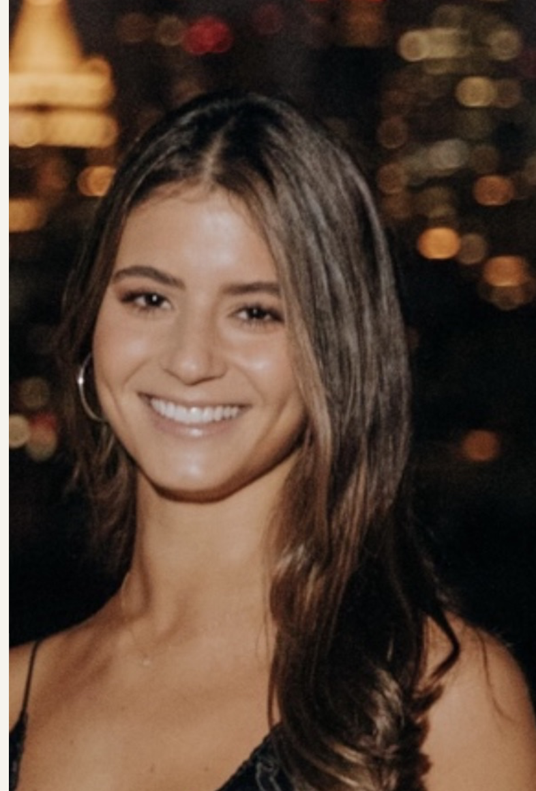

Tessa Rebold

About
I'm currently pursuing my MBA at the University of California,
Berkeley, Haas School of Business.
Before Haas, I built my career across consumer brands, media,
sales, and business development — most recently leading the
New York market for 818 Tequila.
Across those experiences, the common thread has been people:
building strong relationships, growing communities, and turning
ideas into action. At Haas, I'm increasingly interested in how
those skills translate to early-stage companies and investing.
- Venture capital & early-stage investing
- Consumer brands & CPG
- Food & beverage
- Startups & entrepreneurship
- Strategic partnerships
- Community-driven businesses
Experience
My career has centered on growth — finding the right people, building trusted relationships, and helping brands and businesses turn opportunity into action.
Venture & Startups
I'm exploring the intersection of investing, entrepreneurship, and consumer — learning how great early-stage businesses are identified, supported, and scaled.
Girl Math Capital
Member of a community helping women build knowledge and experience across alternative investing, with exposure to founders, investors, investment analysis, networking, and deal flow.
Community & Leadership
Community building has been a consistent part of my life — from creating new ways for people to stay connected to New Orleans to contributing to nonprofit leadership in the Bay Area.
YAAC
Founded and lead YAAC to create a stronger, long-term connection between students, alumni, and the New Orleans community. Through events, fundraisers, and community initiatives, YAAC creates opportunities for people to reconnect, give back, and remain engaged with the city beyond their time as students.
Project Commotion
Selected as a Berkeley Board Fellow supporting Project Commotion, a San Francisco nonprofit focused on healthy child development through purposeful movement, play, and strong family and community relationships.
Learn about Project Commotion ↗Education
University of California, Berkeley
Haas School of Business
Master of Business Administration · 2026–2028
Tulane University
B.A. Communications & Dance
Minor in Business Management